Magnific drafts (assets/prepared/magnific/) 14 files, 53.91 MB
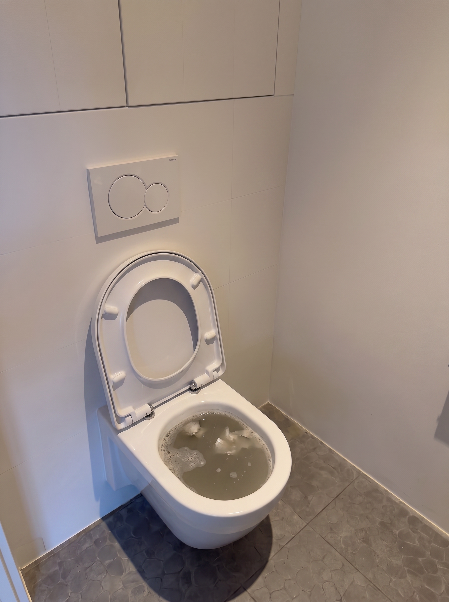
M1 LIVE MASTER
ba-before-recreated.png
Blocked toilet bowl with dirty water, tall photo
Used by: nothing by name. LOG.md (2026-08-26) says it is the source of the five live ba-before-* images.
Same picture as: assets/prepared/web/img/ba-before-800.jpg (a 4:5 crop of it, live)
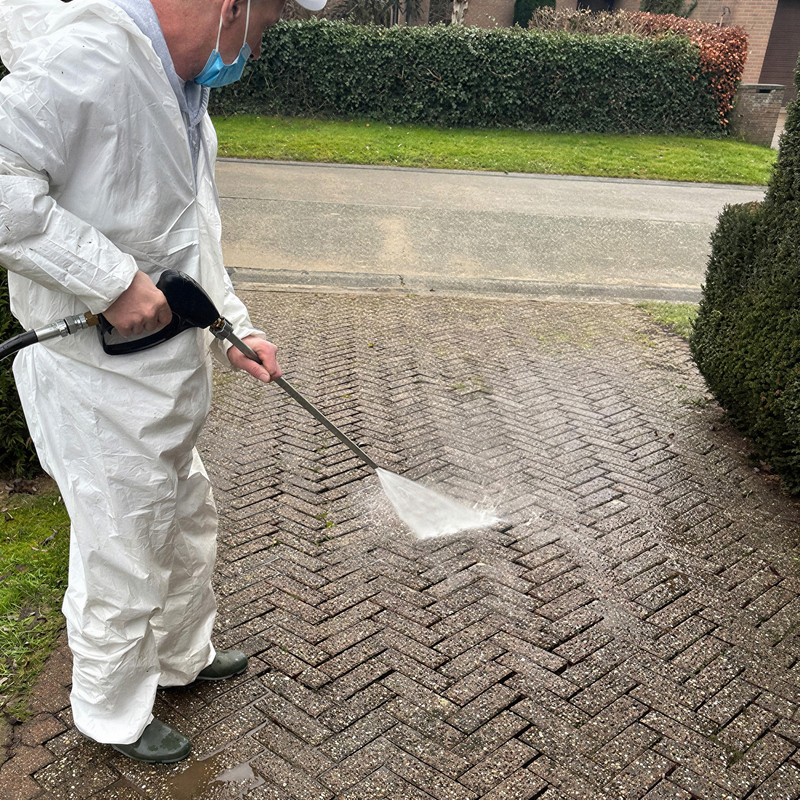
M2 LIVE MASTER
driveway-upscaled-4x.jpg
Man in white suit pressure-washing brick driveway
Used by: nothing by name. Its picture is live (see below).
Same picture as: assets/prepared/web/img/allee-haute-pression-1200.jpg (live, measured match 0.98 of 1.00, so this is its master)
Twin: Sharper version of R8.
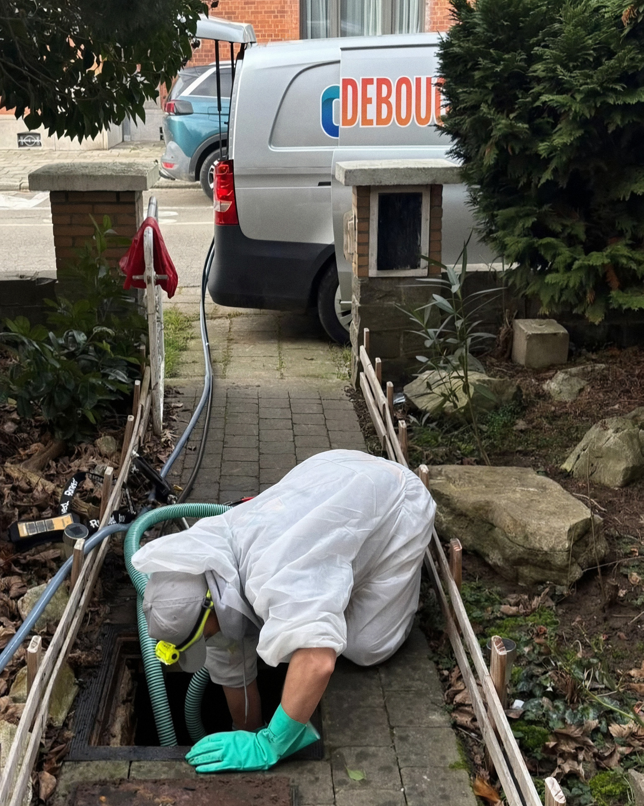
M3
hero-lifestyle12-upscaled-2x.jpg
Technician crawling into garden manhole, van behind him
Used by: nothing.
Same picture as: assets/prepared/web/img/hero-job-2-770.jpg (live). The live file matches assets/raw/lifestyle-12.jpeg slightly better (0.95 against 0.92), so this upscale is probably not its source.
Twin: Near twin of R9 and of raw/lifestyle-12.jpeg.
M4
icon-vector.svg
dP logo mark only, colourful vector, no text
Used by: nothing.
Same picture as: same logo mark as assets/prepared/web/img/logo-icon.svg (live), but a different vector trace, not an exact copy
M5
logo-lockup-tight.png
dP logo with PRO DEBOUCHAGE text, tight crop
Used by: nothing. The same lockup sits in the corner of R3 and of web/img/og-banner-van-2.jpg, but it is not proven this file was used.
Twin: Near twin of M6 (same lockup, other canvas).
M6
logo-lockup-transparent.png
dP logo with PRO DEBOUCHAGE text, square canvas
Used by: nothing.
Twin: Near twin of M5.
M7
van-car1-cutout.png
Silver van cut out on white, phone number on door
Used by: nothing.
Same picture as: cut-out of assets/raw/pro-debouchage-car-1.jpeg (not in web/). The live page uses the sunrise van instead (build.js comment).
M8
van-studio-nanobanana.png
Studio van facing left, white background, phone on door
Used by: nothing.
Twin: Near twin of M9, M10, M11, M12 (same van, other tries).
M9 FLAW: ghost van
van-studio-nanobanana-v2.png
Studio van facing right, blurry ghost van at top
Used by: nothing.
Twin: Near twin of M8, M10 (M10 is a crop of it), M11, M12.
M10 FLAW: roof cut
van-studio-v2-cropped.png
Studio van facing right, roof cut off by crop
Used by: nothing.
Twin: Near twin of M9 (a crop of it).
M11
van-studio-v3a.png
Clean studio van facing right, white background, phone shown
Used by: nothing. The banner R3 and web/img/og-banner-van-2.jpg look like a crop of this van, not proven.
Twin: Near twin of M12. F6 is a small copy of it.
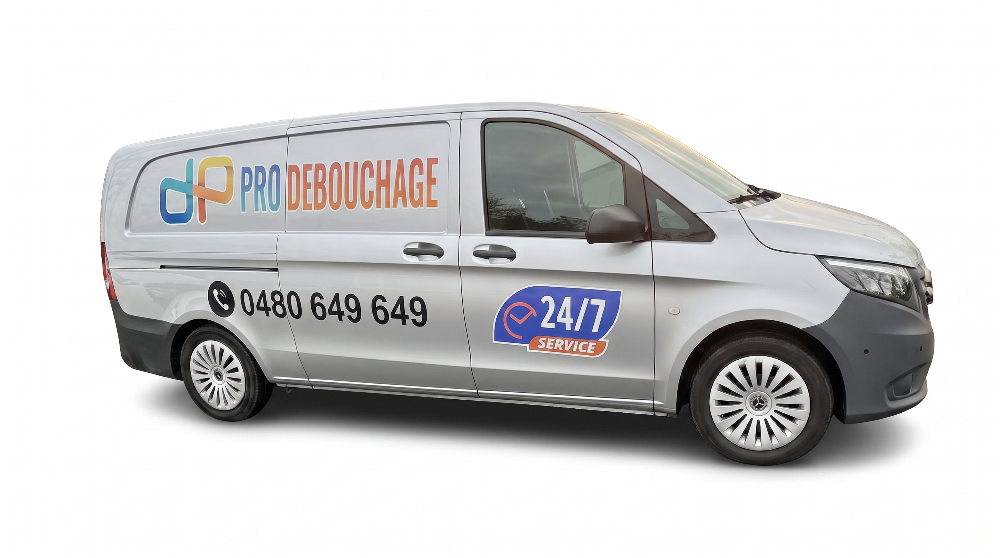
M12
van-studio-v3b.png
Studio van three-quarter view, real-photo look, white background
Used by: nothing.
Twin: Near twin of M11. F7 is a small copy of it.
M13
video-hose-reel-kling.mp4
Video: technician at van hose reel and machine, 5 seconds
Used by: nothing (0 mentions of .mp4 or video in site-v1 and design/).
Twin: F3, F4, F5 are stills from this video (checked by looking at its frames).
M14
video-van-pushin-kling.mp4
Video: slow push-in on van at sunrise, 5 seconds
Used by: nothing (0 mentions of .mp4 or video in site-v1 and design/).
Twin: F8, F9, F10 are stills from this video (checked by looking at its frames).
Magnific frames (assets/prepared/magnific/frames/) 10 files, 8.61 MB
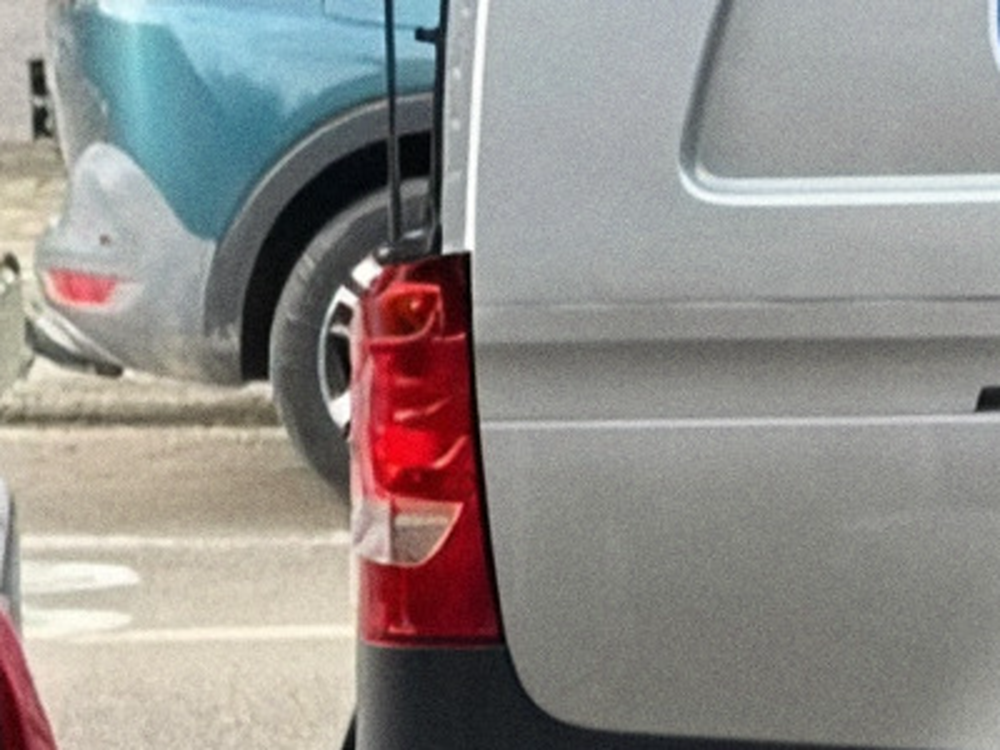
F1
hero-plate-detail.png
Blurry close-up of van tail light and teal car
Used by: nothing.
Twin: A crop of the same scene as M3 (van behind the manhole).
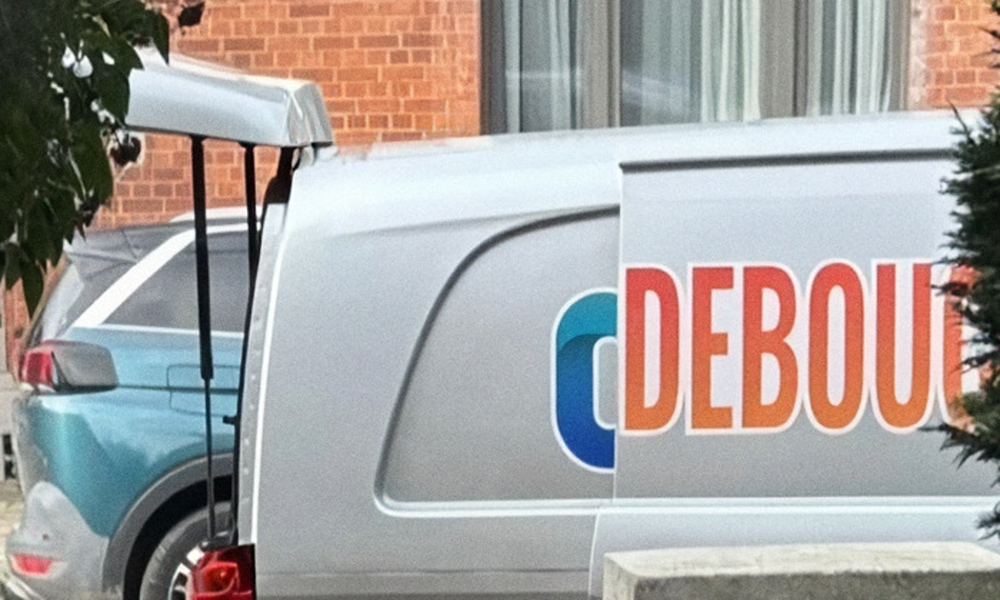
F2
hero-van-detail.png
Blurry close-up of van rear with DEBOU lettering
Used by: nothing.
Twin: A crop of the same scene as M3 (van behind the manhole).
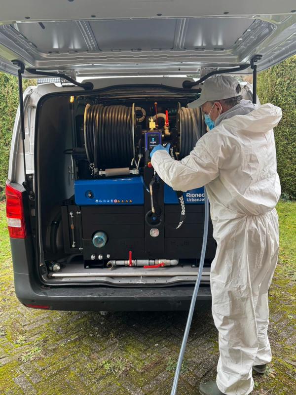
F3
hose-01.png
Technician at open van rear, machine and hose reel
Used by: nothing.
Twin: Still from M13. Near twin of F4, F5.
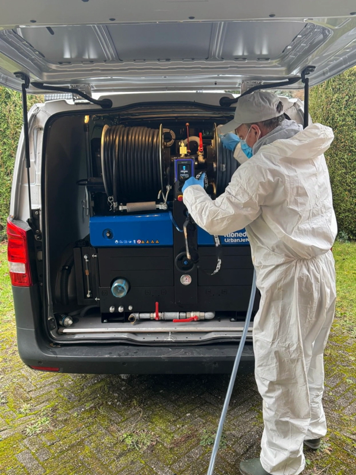
F4
hose-02.png
Same van-rear scene, technician reaching to machine panel
Used by: nothing.
Twin: Still from M13. Near twin of F3, F5.
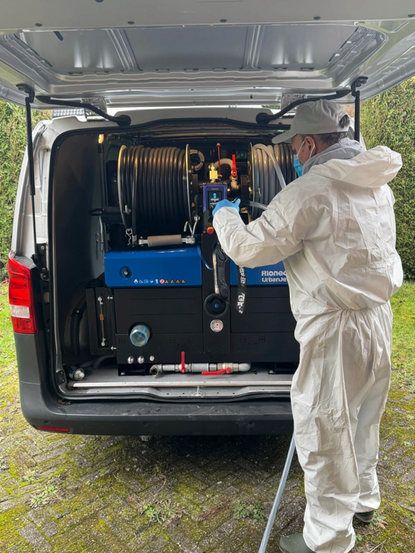
F5
hose-03.png
Same van-rear scene, technician turned, hose in hand
Used by: nothing.
Twin: Still from M13. Near twin of F3, F4.
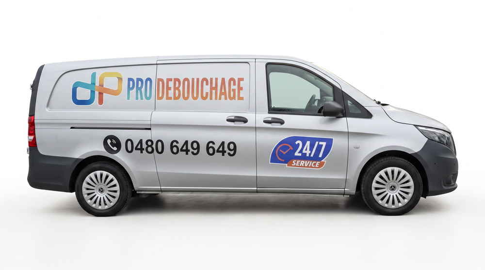
F6
v3a.png
Clean studio van facing right, small copy of M11
Used by: nothing.
Twin: Near twin of M11 (smaller copy).
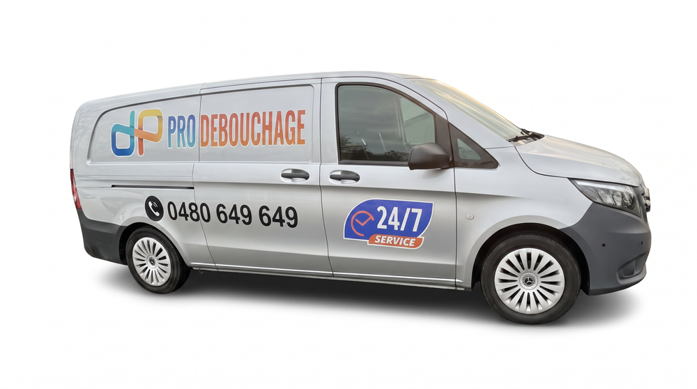
F7
v3b.png
Studio van three-quarter view, small copy of M12
Used by: nothing.
Twin: Near twin of M12 (smaller copy).
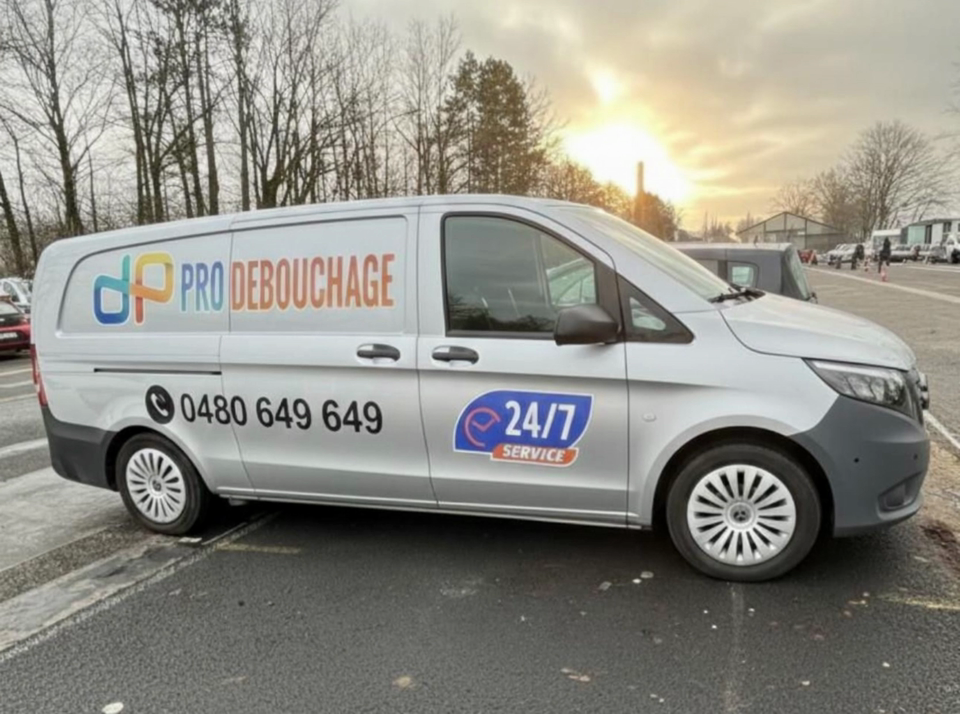
F8
van-01.png
Van with phone number at sunrise, trees behind
Used by: nothing.
Twin: Still from M14. Near twin of F9, F10.
F9
van-02.png
Same sunrise van scene, camera a little closer
Used by: nothing.
Twin: Still from M14. Near twin of F8, F10.
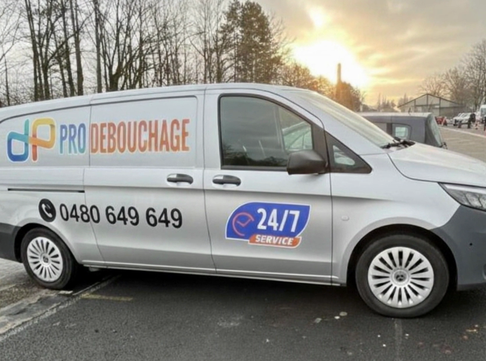
F10
van-03.png
Same sunrise van scene, closest frame, nose cropped
Used by: nothing.
Twin: Still from M14. Near twin of F8, F9.
Raw folder 1: assets/raw/Can no phone number/ 3 files, 8.83 MB

R1 LIVE MASTER
car-1-expanded.jpg
Real van at sunrise, tall photo, no phone number
Used by: nothing by name. But the live van-sunrise-tall-* images match it almost exactly (0.99 of 1.00).
Same picture as: assets/prepared/web/img/van-sunrise-tall-1200.jpg (live, "who comes" photo)
Twin: Near twin of R2 (same shot, other crop).

R2 LIVE MASTER
car-1.jpg
Real van at sunrise, wide photo, no phone number
Used by: nothing by name. The live van-sunrise-* images match it closely (0.97 of 1.00).
Same picture as: assets/prepared/web/img/van-sunrise-1200.jpg (live, tick-van image)
Twin: Near twin of R1 (same shot, other crop).

R3 LIVE MASTER
social-banner.jpg
Studio van, right half, logo top right, share banner
Used by: nothing by name. The live share image matches it (0.97 of 1.00).
Same picture as: assets/prepared/web/img/og-banner-van-2.jpg (live share image)
Twin: Looks cropped from M11 / F6.
Raw folder 2: assets/raw/temporary-low-quality-images/ 6 files, 1.47 MB
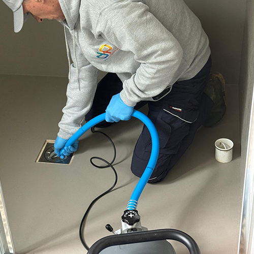
R4 LOW-RES TWIN
1.jpeg
Technician kneeling at floor drain with blue hose
Used by: nothing.
Same picture as: assets/prepared/web/img/hero-job-drain-800.jpg (live, sharper) and assets/raw/lifestyle-9.jpeg
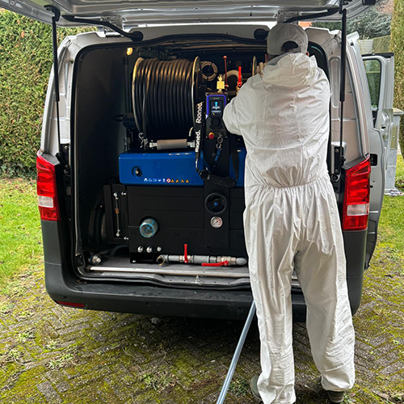
R5 LOW-RES TWIN
3.jpeg
Technician seen from behind at open van machine
Used by: nothing.
Same picture as: assets/prepared/web/img/machine-haute-pression-1200.jpg (live, sharper) and assets/raw/lifestyle-3.jpeg
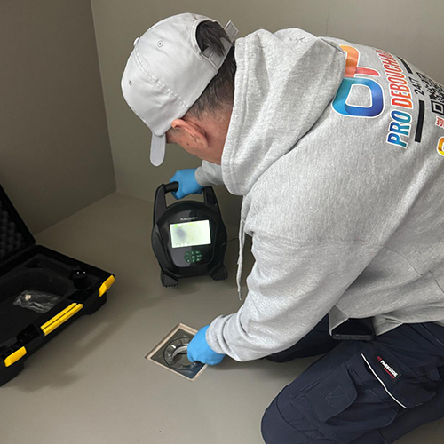
R6 LOW-RES TWIN
4.jpeg
Technician crouching with inspection camera at floor drain
Used by: nothing.
Same picture as: assets/prepared/web/img/camera-moniteur-tenue-800.jpg (live, sharper) and assets/raw/lifestyle-8.jpeg
R7 LOW-RES TWIN
5.jpeg
Technician in QR hoodie working inside toilet bowl
Used by: nothing.
Same picture as: assets/prepared/web/img/job-wc-1200.jpg (live, sharper) and assets/raw/lifestyle-10.jpeg
R8 LOW-RES TWIN
6.jpeg
Man in white suit pressure-washing brick driveway
Used by: nothing.
Same picture as: assets/prepared/web/img/allee-haute-pression-1200.jpg (live, sharper)
Twin: Same picture as M2 (M2 is the 4x upscale of this).
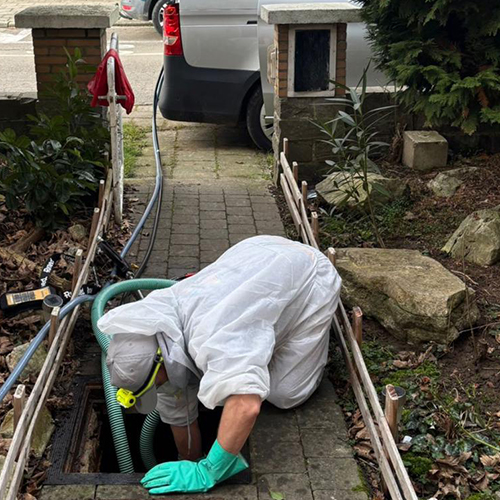
R9 LOW-RES TWIN
7.jpeg
Technician crawling into garden manhole, van behind him
Used by: nothing.
Same picture as: assets/prepared/web/img/hero-job-2-770.jpg (live, sharper) and assets/raw/lifestyle-12.jpeg
Twin: Near twin of M3.